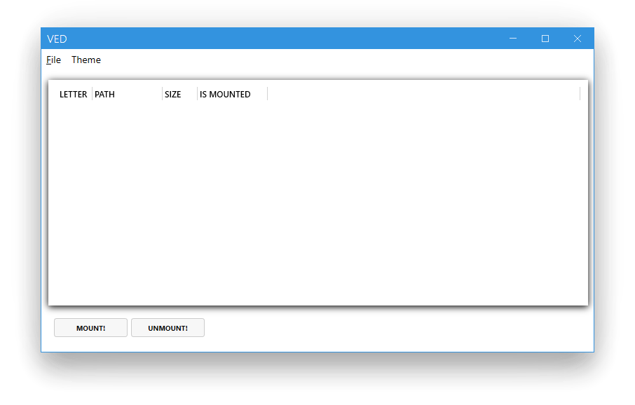
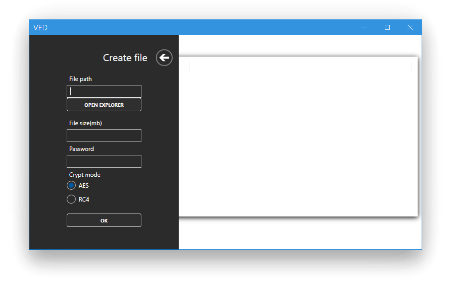
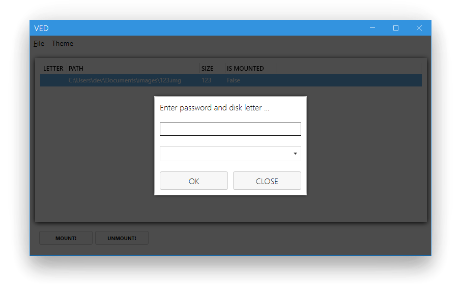
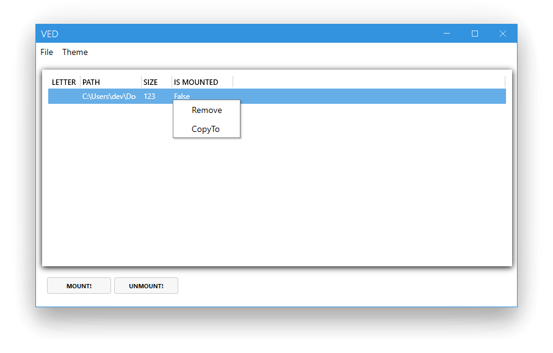
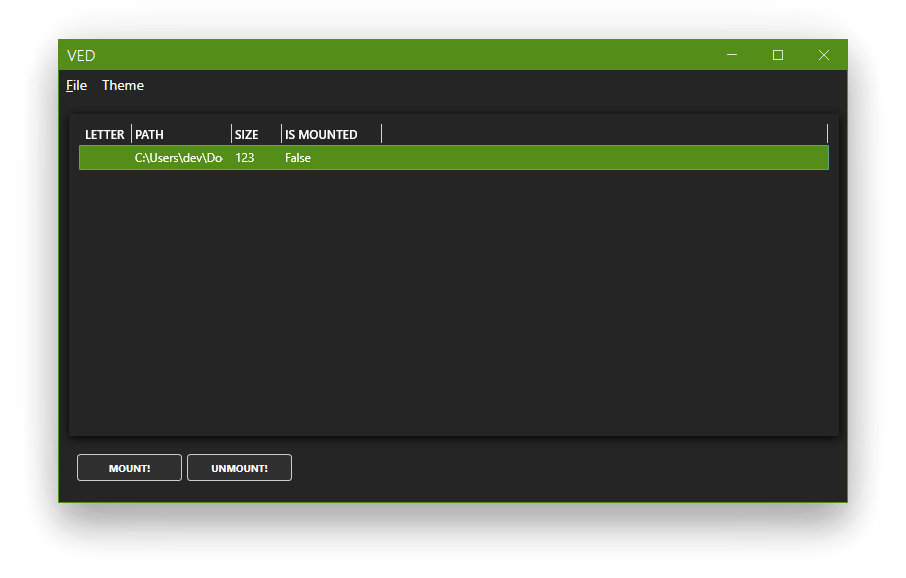
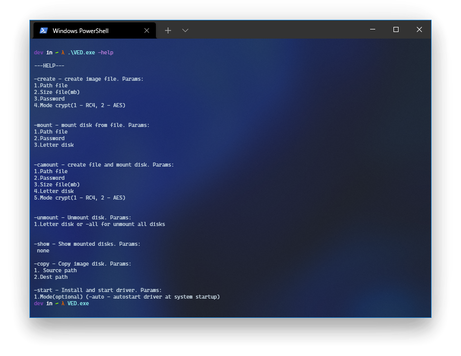
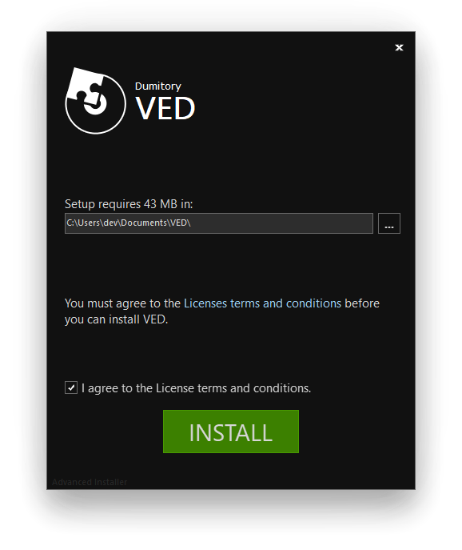

Main window

Letter - letter of the disk
Path - path to the file
Size - file size in megabytes
Is mounted - disk status
Create and Open File

To create a disk, press File and select New, a create file menu will appear.
1. Enter the file path in File path, or choose where to save the file with explorer
2. Enter the file size in File size
3. Enter the file password in File password
4. Select the encryption mode in Crypt Mode and press Ok. If everything was successful, you will see the created file in the main window.
To open a disk, press File and select Open, Then select the desired file in Explorer and it will appear on the main screen.
Mount and Unmount Disk

To mount a disk, select it from the list and press mount.
1. Enter the file password
2. Enter the drive letter. Only available letters are listed, so don't worry!
If all is well, you will see that on the main screen of the selected drive the isMounted property has changed and the drive letter has been added. Now go to explorer and use the disk!
To unmount a disk, simply select it on the main screen and press unmount
Copy and remove disk

To remove a disk from the list, right-click on the selected disk and click delete
To copy a disk from the list right-click on the selected disk and click CopyTo, then use explorer to select the copy location
Change theme

To change the theme of the application, click Theme and select a black or light theme
Console application

You can also use the CLI. Using the console, go to the folder with the installed application and type:
ved.exe -help
Install
Open the console as administrator and type the following command:
bcdedit -set TESTSIGNING ON
Then restart the computer

Download the installer from the link and install the application
The project is compiled and runs on x86, but only the x64 version is currently available.
System Requirements
| OS | Windows 10 (X64) |
| CPU | 1 gigahertz (GHz) or faster processor or SoC. |
| Memory | 2 GB for 64-bit |
| Hard disk space | 100 mb. |
| Display | 800 x 600 |
LICENSE
MIT License Copyright (c) 2021 dumitory Permission is hereby granted, free of charge, to any person obtaining a copy of this software and associated documentation files (the "Software"), to deal in the Software without restriction, including without limitation the rights to use, copy, modify, merge, publish, distribute, sublicense, and/or sell copies of the Software, and to permit persons to whom the Software is furnished to do so, subject to the following conditions: The above copyright notice and this permission notice shall be included in all copies or substantial portions of the Software.
THE SOFTWARE IS PROVIDED "AS IS", WITHOUT WARRANTY OF ANY KIND, EXPRESS OR IMPLIED, INCLUDING BUT NOT LIMITED TO THE WARRANTIES OF MERCHANTABILITY, FITNESS FOR A PARTICULAR PURPOSE AND NONINFRINGEMENT. IN NO EVENT SHALL THE AUTHORS OR COPYRIGHT HOLDERS BE LIABLE FOR ANY CLAIM, DAMAGES OR OTHER LIABILITY, WHETHER IN AN ACTION OF CONTRACT, TORT OR OTHERWISE, ARISING FROM, OUT OF OR IN CONNECTION WITH THE SOFTWARE OR THE USE OR OTHER DEALINGS IN THE SOFTWARE.